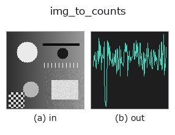

bridge op• 数据种类:image → counts
• 调用:fullseye.apply(img, "img_to_counts", a=0.5, b=0.5)(2-D 的模型是一张图 + 两个标量旋钮 a,b∈[0,1])

*图为在 128×128 合成输入上实际运行的输出。左为输入，右为输出。点云以俯视散点显示(亮度 = z)，一维序列为折线，体数据为沿 z 的最大值投影，视频为中间帧，复数图像为幅值；无法成像的返回值直接显示数值。*
扫描旋钮 a(0.1 / 0.5 / 0.9，另一旋钮取默认):
▸ img_to_counts: knob a sweep (docs site)
扫描旋钮 b(0.1 / 0.5 / 0.9，另一旋钮取默认):
▸ img_to_counts: knob b sweep (docs site)
换别的图像(合成场景 / 照片 / 硬币。上排为输入，下排为对应输出。旋钮取默认):
▸ img_to_counts: other inputs (docs site)
*第 4 列是彩色 (H,W,3) 输入。此算子能正确处理颜色而不跨通道(不把颜色通道当作第三个空间轴卷积)。*
把图像的一行(或一列)当作光子期望值，生成 Poisson 采样的一维计数序列。
> 以下的详细说明为原文 —— 摘要与标题已翻译。
`expected = profile * n_max` を期待値とする Poisson 乱数(固定 seed 20260907)。
光子計数の族(`tb_counts_to_countrate / tb_spad_deadtime_apply` /
`tb_tcspc_background_subtract` …)が受ける 非負整数の 1-D 列 の合成器で、
`tcspc_simulate` と同じく「期待値が既知」なのが検算の根拠になる。
• `a → 行/列の位置(img_to_signal と同じ規則。b` が向きも決める)。
• `b → b < 0.5 で行、b ≥ 0.5` で列。加えて 1 画素あたりの最大光子数
`n_max = 10 ** (1 + 2 * b)`(b=0 で 10、b=0.5 で 100、b=1 で 1,000)。
少ないほど散布雑音が目立つ。
• 返り値: 1-D `int64`、非負。長さは行なら W、列なら H。
• 決定的(seed 固定)。同じ入力・同じノブなら同じ列。
注意: 期待値 0 の画素はカウント 0 になる(Poisson(0) は常に 0)。
• 示例数据目录(下载 URL / 许可证) —— 2-D 用 skimage.data(BSD/公有领域)加合成图,3-D 给出真实数据源(Stanford/PDS 等)的下载 URL。
• 算子来历与参考文献 —— 该算子族所依据的研究/方法出处。
• 算法的正典(作者・年份)与用途见上面的族使用指南。
下面的程序已确认可以运行(与图相同的输入)。在 Studio 帮助中，此块会变成按钮，可当场加载并运行。
img_to_counts 0.50 0.50
▸ Load this pipeline · Load & run
• gallery2d_bridge — py -3.11 examples/gallery2d_bridge.py
counts 作为输入)identity · tb_spad_deadtime_apply · tb_spad_deadtime_correct · tb_tcspc_coates_correct · tb_tcspc_irf_convolve · tb_tcspc_background_subtract · tb_dtof_depth · tb_countrate_to_counts
bridge)img_to_points · img_to_keypoints · img_to_signal · img_to_matrix · img_to_video · img_to_volume · img_to_lightfield · img_to_rgb
*Provenance: ops.py — 2D 算子登记表。本条目由 tools/opdocs.py md 自动生成(请勿手工编辑)。*
© 2026 Kazufumi Furuse — Fullseye operator documentation. Licensed under Apache-2.0.
{kind=link}
{kind=link}
{kind=link}